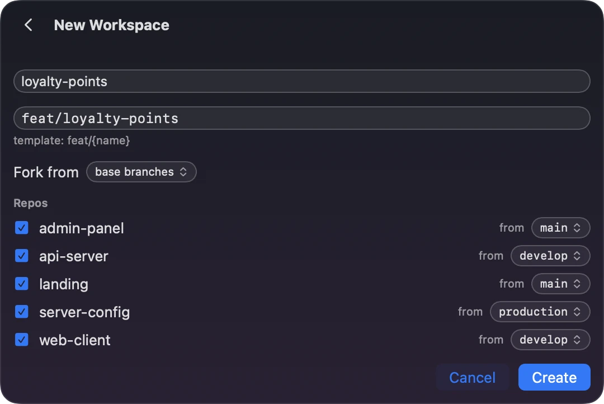

Run Claude Code across multiple repositories
Many products are split across repositories: a client, a server, the server’s configuration, an admin panel, a landing page, a handful of microservices. Merging them into one repository isn’t always sensible, if only because of who should have access to what.
Claude Code starts in one directory, and by default it has access to the files there. Give it the other repositories and run a few sessions in parallel, and they start tripping over branches: one session checks out a branch in the server repository, and another, working on a different feature, is suddenly looking at the wrong code.
There are two ways to give one session several repositories: add them as extra directories, or start the session in a directory that holds a git worktree of each repository, all on the same branch. Workspaces, the part of Brow that lives in the macOS menu bar, builds the second for you, and plain git can too.
Option 1: one session with extra directories (--add-dir)
Start Claude Code in one repository and add the others with --add-dir:
cd ~/code/acme-shop/web-client
claude --add-dir ../api-server ../server-configIn a session that is already running, /add-dir adds a directory:
/add-dir ../api-serverTo have them added every time you start Claude Code in web-client, list them under permissions.additionalDirectories in its .claude/settings.local.json:
{
"permissions": {
"additionalDirectories": [
"../api-server",
"../server-config"
]
}
}What this gives the session:
- File access. Claude can read and edit files in the added directories under the same permission rules as in the one you started in.
- Only some of their configuration. Claude Code doesn’t discover most
.claude/configuration in added directories. Skills, commands and subagents load from directories added with--add-diror/add-dir. TheirCLAUDE.mdfiles load only whenCLAUDE_CODE_is set. Directories inADDITIONAL_ DIRECTORIES_ CLAUDE_MD=1 permissions.additionalDirectoriesgive file access and nothing else. - No branches of their own. The added directories are your usual checkouts. When another session checks out a branch in one of them, this session is looking at that branch too.
To have the other repositories’ CLAUDE.md files loaded as well:
CLAUDE_CODE_ADDITIONAL_DIRECTORIES_CLAUDE_MD=1 \
claude --add-dir ../api-server ../server-configStarting Claude Code in the folder that holds all the checkouts gives the same file access without flags, and each repository’s CLAUDE.md loads once Claude works on files in it. The checkouts are still the ones every other session uses.
cd ~/code/acme-shop
claudeOption 2: a workspace of worktrees, one branch across all repositories
A git worktree is an extra working directory of a repository, with its own files and its own checked-out branch, sharing the repository’s history and remotes. A workspace is a directory for one feature that holds a worktree of each repository you pick, all on the same branch. Claude Code starts in the workspace directory:
# start Claude Code here:
~/Workspaces/acme-shop/loyalty-points/
├── api-server/ feat/loyalty-points
└── web-client/ feat/loyalty-pointsCompared with option 1:
- Each workspace has its own checkouts. A worktree has its own
HEAD, so checking out a branch in your usual checkout, or in another workspace, leaves this one alone. git won’t check outfeat/loyalty-pointsin any other worktree while this workspace has it. - Claude Code sees the whole product. Every repository is under the directory it starts in. A
CLAUDE.mdat the workspace root loads at launch, so it is the place for notes on how the repositories fit together. Each repository’s ownCLAUDE.mdand skills load once Claude works on files in that repository. - Project settings come from the workspace directory. Claude Code reads
.claude/settings.jsonfrom the directory it starts in, so hooks and permission rules committed in a repository don’t apply to a session started at the workspace root.
In Brow
A project in Workspaces is the folder that holds your repositories. Add it once: in Settings → Workspaces, turn Workspaces on and press Add project…, or press the button with stacked squares in the notch panel and choose Add project…, then pick the folder. Open the project from Brow’s item in the menu bar, the notch with two dots, and on its Workspaces tab press + Workspace:
- Type a name. The branch comes from the project’s template,
feat/{name}by default, and you can change it. - Every repository is ticked; untick the ones the feature doesn’t touch. Each starts from its own base branch, detected from
origin/HEADor set in the project’s settings, and the from menu next to it picks another. Fork from can start them from another workspace’s branches instead. - Press Create. Brow runs
git worktree addin each repository, then links or copies the project’s seed files, such asCLAUDE.md, and runs the post-create hooks you set. - Press New Claude on the workspace. The launch sheet picks the account, with each account’s 5-hour and weekly use beside its name, the model and the effort, and opens Claude Code in the workspace directory, in cmux or Terminal.app.

With the brow command-line tool
The command-line tool does the same from a terminal or a script, and installs with Homebrew:
brew install efim0v/tap/brow-cliIt is also in each release as brow-cli.zip, and either way it comes with grove as a second name, so scripts written for Grove’s tool keep working. Create the workspace and start Claude Code in it:
brow create ~/code/acme-shop loyalty-points \
--repos api-server,web-client
cd ~/Workspaces/acme-shop/loyalty-points
claudebrow create takes the folder that holds the repositories and a workspace name. --repos picks repositories by folder name; without it, every repository the tool finds in the folder goes in. --branch sets the branch name, and --from stacks the new workspace on another one. The tool uses the default layout, ~/Workspaces/<project>/<name> on feat/<name>, and none of the app’s per-project settings, so it links no seed files and runs no hooks. If a creation fails partway, it lists what it made and leaves it in place.
Doing it by hand with git
A workspace is plain git, so you can build one without Brow. In each repository, fetch, then add a worktree on the feature branch, starting from that repository’s base branch:
cd ~/code/acme-shop
ws=~/Workspaces/acme-shop/loyalty-points
git -C api-server fetch origin
git -C api-server worktree add \
--no-track -b feat/loyalty-points \
"$ws/api-server" origin/main
git -C web-client fetch origin
git -C web-client worktree add \
--no-track -b feat/loyalty-points \
"$ws/web-client" origin/main
cd "$ws"
claudegit worktree addcreates the missing directories, so there is nomkdirstep.- Put each repository’s own base branch in place of
origin/main. --no-trackkeeps git from makingorigin/mainthe new branch’s upstream, which it does by default when the start point is a remote-tracking branch. With that upstream,git statuscompares the branch withorigin/main, and a plaingit pushrefuses by default because the names differ. A branch Brow creates fromorigin/maindoes get that upstream: Brow doesn’t pass--no-track. Either way, the first push isgit push -u origin feat/loyalty-points.git fetchcomes first because nothing else here fetches: the worktree starts fromorigin/mainas your clone last saw it. Brow doesn’t fetch either; its git commands never fetch, pull or push.
What Brow adds:
- Branch names from a template,
feat/{name}by default. - A base branch per repository, detected from
origin/HEADor set by hand, or another workspace’s branches, so workspaces can be stacked. - Seed files:
CLAUDE.mdor any other file in the project folder, linked or copied to the workspace root or into each repository. - A post-create hook per repository: a shell command that runs in its new worktree.
- When a creation fails partway, the app offers to roll back what that run made: its worktrees and the branches it created.
- Each workspace’s Claude Code sessions, across accounts, shown as running, waiting or closed, and every account picker with that account’s 5-hour and weekly use, as Brow’s notch reads it.
Which one to use
| Approach | Gives the session | Use it for |
|---|---|---|
--add-dir | More repositories, on whatever branch each checkout is on | One session at a time |
| A workspace | A worktree of each repository, all on the feature’s branch | Several features in parallel, each across repositories |
--worktree | A worktree of the repository you run it in, on a new branch | Parallel sessions in a single repository |
Claude Code’s own --worktree starts a session in a new worktree, by default under .claude/worktrees/<name>/ on a branch named worktree-<name>. If your product lives in one repository, that may be all you need:
claude --worktree feature-authA workspace and claude --worktree, side by side
| Aspect | claude --worktree | A workspace in Brow |
|---|---|---|
| Repositories | The repository you run it in | Every repository you pick, under one directory |
| Location | .claude/worktrees/<name>/ at the repository root; elsewhere through a WorktreeCreate hook, or with git worktree add yourself | ~/Workspaces/<project>/<name> by default, set by a template |
| Branch | worktree-<name> | From a template, feat/{name} by default |
| Start point | worktree.baseRef: fresh (the remote default branch) or head (your local HEAD); it can’t name a branch. Given a pull request number or URL, the worktree starts from that pull request. | A base branch per repository, from origin/HEAD or set by hand, or another workspace’s branches |
| Files outside git | .worktreeinclude copies gitignored files such as .env | Files you choose, such as CLAUDE.md, linked or copied to the workspace root or into each repository |
| Setup | Ask Claude, or run your setup yourself; a WorktreeCreate hook can replace creation | A post-create hook per repository |
| Cleanup | On exit, removes the worktree of an unnamed session if it is clean, and asks otherwise | Workspaces stay until you remove them with git worktree remove. If creating one fails, the app offers to roll back what that run created. |
| Accounts | — | Resume as…, Migrate to… and Share move a session to another account |
Questions
Does every repository need the same base branch?
No. Each repository starts from its own. In Brow it is detected from origin/HEAD, set per repository in the project’s settings, or picked on the New Workspace form. With the command-line tool, --from-branch sets it for one repository, and you can repeat it:
brow create ~/code/acme-shop loyalty-points \
--from-branch api-server=origin/developBrow takes a branch name that only origin has, such as develop in a clone with no local develop, as origin/develop. By hand, write origin/develop yourself: given a name that exists only on the remote, git worktree add puts the worktree on that branch and doesn’t create the feature branch.
What if the feature branch already exists?
If a repository already has a local branch of that name, Brow checks it out in the new worktree instead of creating it. Brow doesn’t look at the remote: when the branch exists only on origin, it creates a new local branch from the base branch, so create the local branch first.
By hand, leave out -b and --no-track and name the branch in place of the start point. git checks out the local branch or, if there is none, creates one that tracks the branch on origin:
cd ~/code/acme-shop
ws=~/Workspaces/acme-shop/loyalty-points
git -C api-server worktree add \
"$ws/api-server" feat/loyalty-pointsEither way, git refuses if the branch is checked out in another worktree, your usual checkout included.
How do I remove a workspace?
Remove each worktree with git worktree remove, then the directory:
cd ~/code/acme-shop
ws=~/Workspaces/acme-shop/loyalty-points
git -C api-server worktree remove "$ws/api-server"
git -C web-client worktree remove "$ws/web-client"
rmdir "$ws"git refuses to remove a worktree with modified or untracked files unless you add --force, and rmdir stops if anything else is left, such as a seeded CLAUDE.md. The branches stay until you delete them. Brow has no button for this, and it never deletes a worktree or a branch on its own: a workspace is made of ordinary worktrees and branches in your repositories.
If a worktree’s directory was deleted first, git worktree prune clears what git still records about it:
git -C ~/code/acme-shop/api-server worktree pruneDoes this work with agents other than Claude Code?
A workspace is an ordinary directory, so you can start any command-line agent in it yourself. Brow itself starts, lists and moves Claude Code sessions only.
See also
- Continue a Claude Code session on another account
- Use multiple Claude Code accounts on one Mac
- Workspaces in detail, including the command-line tool
- Brow: Claude Code usage limits in the MacBook notch, and Workspaces
Claude Code behavior on this page was checked on 13 October 2026 against Anthropic’s documentation: the CLI reference, working directories, CLAUDE.md in additional directories, permissions.additionalDirectories and worktrees. git behavior is from the git-worktree manual and was tried with git 2.54. Brow’s behavior is that of version 0.4.0.